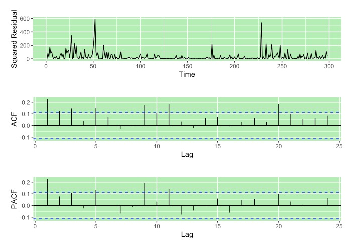
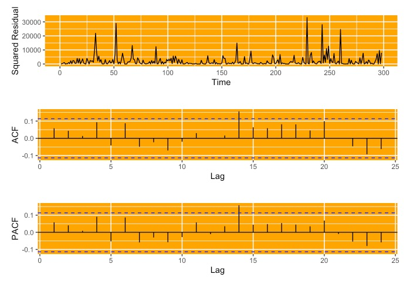
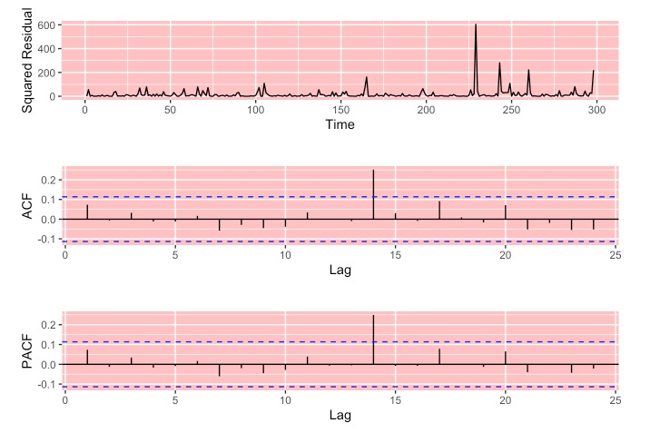
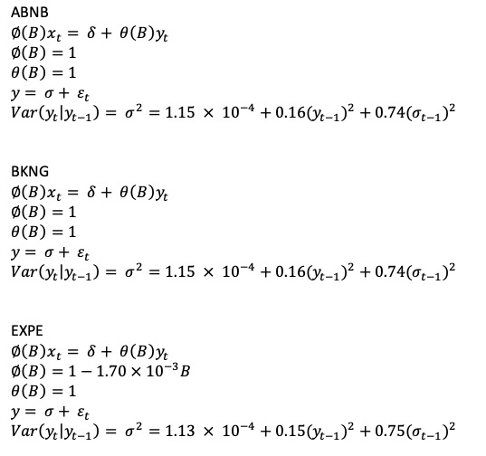
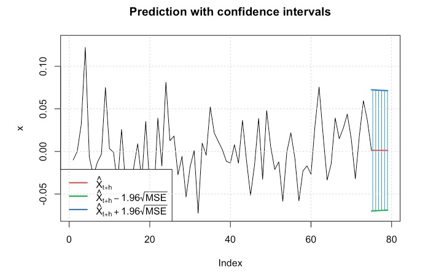

In this part, I will analyze stationarity and volatility of the adjusted close price of three travel agencies by fitting appropriate AR+ARCH/ARMA+GARCH or ARIMA-ARCH/GARCH for the returns data.

A return is the change in price of an asset, investment, or project over time, which may be represented in terms of price change or percentage change. The return plots of three companies all showed that volatility is not constant. GARCH model may be applied to the log return of Adjusted Price.

The ACF of return plot shows the stationary of the data since most of the lags are within the boundary line.

On PACF plots, Partial autocorrelation spikes decrease rapidly. Then I did Augmented Dickey-Fuller Tests on the return data. For the three companies, the p-values are all 0.01 which are smaller than 0.05 significance level. So the null hypothesis should be rejected which means the return of these three companies is stationary.

ARCH test residues of ABNB

ARCH test residues of BKNG

ARCH test residues of EXPE
I fit these three timeseries data into proper ARIMA models. ABNB: ARIMA(0,1,0), BKNG: ARIMA (0,1,0), EXPE: ARIMA(1,1,0). Then I got residues from ARIMA models and performed ARCH test on residues. For each timeseries, the squared residual, ACF of squared residual, and PACF of squared residual are plotted.

I fit proper ARIMA models and got AIC values for model evaluation. Then I fit the best GARCH model for each timeseries. The coefficient for the equation can be obtained from the summary of ARIMA and GARCH models.
ABNB: ARIMA(0,1,0)+GARCH(1,1)
BKNG: ARIMA(0,1,0)+GARCH(1,1)
EXPE: ARIMA(1,1,0)+GARCH(1,1)

The plot shows the prediction by ARIMA(0,1,0)+GARCH(1,1), including the prediction in the future 5 days.